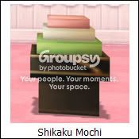
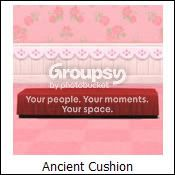

ของคุงคับ

เศร้าใจ T^T
http://eco.froztic.in.th/archive/ecofanclub/
http://eco.froztic.in.th/archive/ecofanclub/viewtopic.php?f=24&t=62339


wolf เขียน:มิ้น เขียน:Non€DeAd เขียน:wolf เขียน:สีน้ำเงิน แลก mix ได้ที่กลาง
สีแดง แลก mix ที่ใต้
ช่วยขยายความอีกนิดค่ะ
เอา มิกเจอร์เฟลเลอร์ 10 ชิ้น แลกเซริโกะสีได้1 ชิ้น
ที่ร้านจังค์ตามเมืองต่างๆ
100 ชิ้น ต่อเซริโกะสี 1 อันครับ
ถังสี 2 ถัง = เซริโกะสี 40 ชิ้น = mix 4000 ชิ้น
Dot Man เขียน:แลกหมดทุกสียกเว้นสีดำ
มีสีดำติดตัวแค่ 5 อันเอง สีดำหาก็ยาก ดรอปก็ยาก คนขายก็แพง +ไม่มีดวงจากกล่อง หรือจากเควสเอาซะเลย....แบบนี้..."อดสินะ"....ทั้งที่เป็นของที่อยากได้ที่สุด
จะทำยังไงถึงจะหาสีดำได้เร็วๆๆ ละเนี่ย~~~~ โอ้ย อยากจะบ้า คิดไม่ออกแล้ววววววว

 )
)
wind7 เขียน:วันพุธ :first02: :first02:
หาสีไม่ทันแล้ว มั้งนี้
-คนหน้าตาดี- เขียน:วันจันทร์
ของที่ใช้ : Otsukimi Dango 1 อัน
วันอังคาร
ของที่ใช้ : Small Carpet 2 อัน
วันพุธ
ของที่ใช้ : Lacquer Chair 2 อัน
วันพฤหัสบดี
แลกได้ทุกชิ้นในวันนี้
วันศุกร์
ของที่ใช้ : Lamp 1 อัน
วันเสาร์
ของที่ใช้ : Big Carpet 1 อัน
วันอาทิตย์
ของที่ใช้ :ไอ้เนี่ย ไม่รู้ชื่ออะไร
แหล่งข้อมูล : ECO Wiki 2009